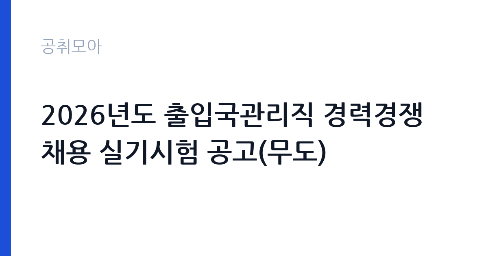

[국가기관] 2026년도 출입국관리직 경력경쟁채용 실기시험 공고(무도)
법무부 · 전국 · 마감 2026-11-30 (D-39) · 출처 나라일터

한눈에 보는 모집 조건
| 기관 | 법무부 |
|---|---|
| 공고명 | 2026년도 출입국관리직 경력경쟁채용 실기시험 공고(무도) |
| 고용형태 | 정규직 |
| 근무지 | 전국 |
| 게시일 | 2026-10-22 |
| 마감일 | 2026-11-30 (D-39) |
지원자격, 이렇게 읽으세요
- 8-9급 0명
- 접수 ~2026-11-30 마감
- 세부 조건은 원문 공고문 확인
정규직 채용은 기간의 정함이 없는 근로계약을 전제로 합니다. 수습 기간을 두고 평가한 뒤 정규직으로 확정하는 절차가 일반적이며 기관의 인사 규정과 임금 체계를 적용받습니다. 이번 공고는 법무부에서 직접 진행하는 자체 전형으로, 응시자격과 제출서류는 공고문에 항목별로 제시됩니다. 응시 자격은 공고문의 응시자격 항목에 직급별로 나뉘어 제시됩니다. 학력·경력·자격 요건을 모두 충족해야 하며 하나라도 빠지면 서류에서 탈락합니다. 경력은 증명서로 입증해야 하므로 재직증명서와 경력증명서를 미리 준비하십시오. 우대 사항은 가점으로 반영되므로 해당 여부를 확인해 증빙을 붙여야 합니다. 결격사유 조회와 신원 확인 절차가 공통으로 적용됩니다. 서류는 접수 마감 이후 보완이 되지 않으므로 자격 요건과 증빙 서류를 마감 전에 모두 갖춰야 합니다. 공고문에 명시된 우대 사항은 해당 여부를 확인해 증빙을 첨부해야 가점이 반영됩니다. 동일 직무 경력자와 경쟁하게 되므로, 관련 경험이 있다면 증명서에 업무 내용이 구체적으로 적히도록 요청하십시오.
이 공고의 포인트
이 공고의 첫 번째 포인트는 고용 형태입니다. 수습 기간 평가를 통과하면 기간의 정함이 없는 신분이 되어 고용이 안정됩니다. 두 번째는 업무 범위가 명확하다는 점입니다. 현장 실무 직무로 채용되므로 배치 이후 담당 업무가 크게 흔들리지 않습니다. 세 번째는 근무지입니다. 전국 지역 근무로 수도권 공고에 비해 지원자 분포가 넓지 않아 상대적으로 경쟁이 분산되는 경우가 있습니다. 자격 요건이 까다롭지 않은 대신 지원자가 몰리는 유형의 공고입니다. 같은 직무로 함께 올라온 공고 가운데 접수 마감이 가장 늦은 편이라 준비 시간을 상대적으로 확보할 수 있습니다. 다만 선발 인원이 0명으로 많지 않아 자격을 갖춘 지원자가 몰리면 경쟁률이 높아질 수 있습니다.
전형은 어떻게 진행되나
채용 절차는 공고문에 안내된 순서대로 진행되며, 서류 접수 마감 후에는 추가 접수나 서류 보완이 이뤄지지 않는 것이 원칙입니다. 서류심사에서는 응시자격과 제출서류의 형식 요건을 기계적으로 확인하므로, 경력 증명서의 기간과 직무 내용이 공고의 요건과 정확히 맞아야 합니다. 면접은 지원자 수에 따라 집단면접과 개별면접으로 나뉘고, 직무 관련 질문과 상황 대응 질문이 함께 나옵니다. 합격자 발표는 개별 통보 또는 홈페이지 게시로 이뤄지며 이후 임용 절차가 진행됩니다. 면접조 편성과 대기 시간이 공지되므로 당일 도착 시간을 여유 있게 잡으십시오.
이런 분께 추천해요
- 공고 직무와 관련된 경험이 있는 분
- 기관의 사업에 관심을 갖고 사전 조사를 해온 분
- 정해진 절차와 기한을 지킬 수 있는 분
지원 전 체크리스트
- 응시자격 요건과 경력 기준을 충족하는가 — 경력은 증명서로 입증해야 합니다
- 수습 기간과 정규직 전환 조건을 확인했는가
- 제출서류 목록을 모두 준비했는가 — 누락 시 서류 단계에서 탈락합니다
- 접수 마감 2026-11-30 이전에 접수 방식을 확인해 제출했는가
모집 일정과 제출 타이밍
접수 마감은 2026-11-30이고 공고는 2026-10-22에 게시되었습니다. 준비 기간 39일 안에 서류 작성, 증빙 발급, 접수를 모두 마쳐야 하므로 주말을 포함해 일정을 미리 나누는 것이 좋습니다. 특히 경력 기술서나 직무수행계획서를 요구하는 공고는 작성에 시간이 걸리므로 첫날 초안을 잡으십시오. 서류 합격자 발표와 면접 사이 간격이 짧은 경우가 많아 면접 예상 질문은 서류 제출 전에 정리해 두는 편이 유리합니다. 마감 직전에는 접속이 몰리므로 여유를 두고 제출하십시오. 서류 발표일과 면접일 사이가 짧은 경우가 많아 면접 준비는 접수와 동시에 시작하는 편이 좋습니다. 근무지 세부 위치와 출퇴근 조건은 공고문에서 확인하는 것이 가장 정확합니다. 마감까지 여유가 있어 자격 요건을 천천히 확인하고 준비할 수 있습니다. 선발 인원이 한두 명 수준이라 지원자 개개인의 서류 완성도가 그대로 평가에 반영됩니다.
직무 이해하기: 국가기관
법무·사법 기관은 재판과 송무, 수사, 교정 업무를 담당합니다. 법원행정처와 각급 법원은 재판 지원과 등기, 가족관계 업무를 운영하며, 법무부는 출입국과 보호, 교정 시설을 관리합니다. 보안과 비밀 유지 요건이 다른 기관보다 엄격합니다. 이 공고의 직무는 기관이 맡은 사업을 현장과 사무 양쪽에서 수행하는 실무입니다. 담당 업무는 배치 부서에 따라 정해지며, 문서 작성과 자료 정리 같은 사무 업무와 현장 확인·지원 업무가 함께 붙는 경우가 많습니다. 업무 지침과 절차가 정해져 있어 그에 따라 처리하고 처리 결과를 기록으로 남깁니다. 민원이나 이용자를 대면하는 업무가 포함되면 응대 태도가 평가에 반영됩니다. 구체적인 업무 범위는 공고문의 직무 설명 항목에서 확인하십시오. 업무는 혼자 처리하기보다 부서 단위로 나눠 진행되므로 담당 구역과 협업 범위를 입사 초에 확인하는 것이 중요합니다. 업무 강도와 근무 시간대는 부서 배치에 따라 달라지므로 면접에서 확인하는 것이 가장 정확합니다.
자기소개서 작성 팁
자기소개서는 지원 동기, 직무 경험, 기여 방안의 세 축으로 구성하십시오. 첫 문단에서 지원 기관의 어떤 사업에 기여하고 싶은지 한 문장으로 밝히고 이후 경험을 구체적으로 서술합니다. 수치와 사례를 넣으면 설득력이 올라갑니다. 마지막에는 장기적으로 어떤 역할을 맡고 싶은지 방향을 제시하십시오. 문항별 글자 수 제한을 먼저 확인하고, 각 문항의 첫 문장에 결론을 배치하는 방식이 읽기 쉽습니다. 지원 동기는 기관의 어떤 사업에 기여하겠다는 한 문장으로 시작하고, 이어서 본인의 경험을 근거로 붙이십시오. 감점을 피하려면 다른 기관에 보낼 수 있는 범용 문장을 그대로 쓰지 않는 것이 중요합니다. 기관 이름과 사업명이 문장 안에 자연스럽게 들어가야 준비도가 드러납니다.
면접 준비 포인트
면접에서는 직무 이해도와 조직 적응력을 확인합니다. 지원한 기관이 하는 일을 어느 정도 알고 있는지, 맡은 업무를 어떻게 처리할 것인지 묻습니다. 구체적인 경험을 근거로 답하는 것이 중요하며 추상적인 포부만 나열하면 평가가 낮아집니다. 갈등 상황이나 업무 과부하 상황에서의 대응 방식도 자주 질문합니다. 답변은 상황, 판단, 조치의 순서로 정리하면 전달이 분명해집니다. 모르는 질문에는 모른다고 밝히고 확인 방법을 제시하는 편이 억지 답변보다 낫습니다. 마지막에는 근무 의사와 함께 2026-11-30 이후 일정에 언제든 응할 수 있다는 점을 전달하십시오. 면접 당일 신분증과 제출서류 원본을 요구하는 경우가 있으니 공고문의 준비물 목록을 확인하십시오.
급여·근무조건 읽는 법
보수는 채용 신분과 기관의 임금 규정에 따라 정해집니다. 공무직과 기간제는 기관 임금표를, 임기제공무원은 연봉등급제를 적용받습니다. 공고문에 금액이 제시되지 않은 경우에는 처우 항목이나 첨부된 보수표를 확인해야 합니다. 2026년 최저임금은 시급 10,320원, 월 환산 2,156,880원(209시간 기준)이므로 최소 기준선으로 삼으십시오. 수당과 상여 포함 여부에 따라 실수령액이 달라집니다. 2026년 적용 최저임금은 시급 10,320원, 월 환산 2,156,880원(주 40시간·209시간 기준)입니다. 고용노동부 고시 제2025-47호로 확정된 금액입니다. 보수는 보통 기본급, 각종 수당, 상여로 나뉘어 지급됩니다. 기본급만 보면 적어 보여도 정액급식비와 명절휴가비, 복지포인트가 붙으면 실제 총액이 달라지므로 항목별로 확인해야 합니다. 4대 보험과 퇴직급여 적용 여부도 함께 보십시오. 기간제는 계약 기간이 짧아 월 급여가 높아도 연간 총액은 적을 수 있습니다.
자주 묻는 질문
- 선발 인원은 몇 명인가요?
공고문 기준 0명입니다. 직종별로 인원이 나뉘는 경우가 있으니 모집분야 항목을 함께 확인하십시오. - 근무지는 어디인가요?
전국 지역의 법무부 소속 근무지입니다. 세부 주소와 출퇴근 조건은 원문 공고문에서 확인할 수 있습니다. - 보수는 얼마인가요?
채용 신분(정규직)과 기관 임금 규정에 따라 정해지며 구체적인 금액은 공고문 처우 항목에 제시됩니다. 금액이 공개되지 않은 경우에는 원문의 보수표를 확인하십시오.
함께 보면 좋은 공고
[국가기관] 서울경찰청 3기동단 공무직 무기직(시설관리)근로자 채용 공고 — 마감 2026-11-02[국가기관] 2026년 통일부 전산주사보(일반임기제) 경력경쟁채용 공고 — 마감 2026-11-02[국가기관] 2026년 하반기 공무직 및 기간제 근로자 채용 공고문 — 마감 2026-11-03출처: 나라일터 공개정보를 바탕으로 공취모아가 정리한 안내글입니다. 모집 조건·일정은 변경될 수 있으니 지원 전 반드시 원문 공고문을 확인하세요. 본 글은 정보 제공용이며 합격을 보장하지 않습니다.